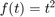
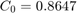
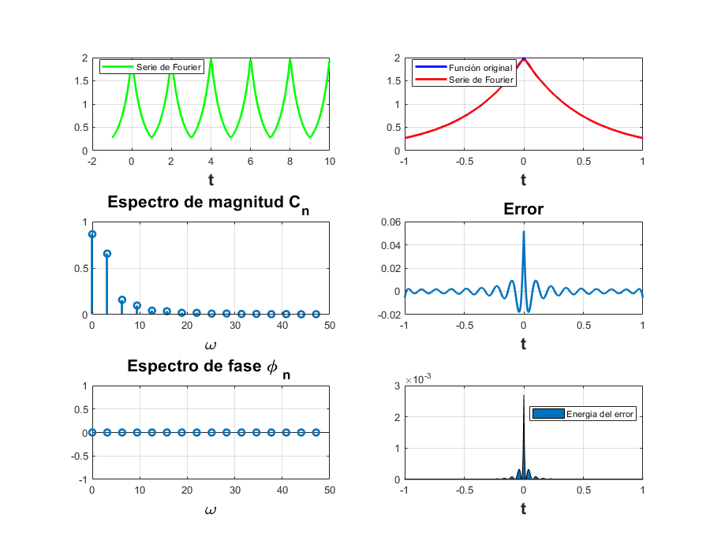

P05 Series de Fourier en Tiempo Continuo
INTEGRANTES
- Carlos Josafath López Favila
- Iván Rodrigo Santacruz Bravo
Contents
- OBJETIVOS
- Ejemplo 6.2 Agregar la expresión análitica de la serie en ambos formatos. Utilizar A =1.
- Ejemplo 6.4 Agregar la expresión análitica de la serie en ambos formatos.
- PR08 Agregar la expresión análitica de la serie en ambos formatos (hay dos series en esta tarea).
- PR10 Agregar la expresión análitica de la serie en ambos formatos (ejercicio 1 y ).
- REFERENCIAS
- Apendices
OBJETIVOS
- Realizar gráficas de series de Fourier exponenciales y trigonométricas en tiempo continuo
- Manipulación de instrucciones en MATLAB
Ejemplo 6.2 Agregar la expresión análitica de la serie en ambos formatos. Utilizar A =1.
Para este ejercicio debemos de representar las Series de Fourier de la siguiente función:
En el intervalo [-1/2,3/2]
Tenemos que la serie de Fourier exponencial compleja de x(t) es
Donde
Para este ejercicio, la serie de Fourier Exponencial es:
close dn=@(n) -i*(4*sin((n*pi)/2)/((n*pi)^2)); d0=0; t0=-1/2; tf=3/2; f=@(t) (2*t).*(heaviside(t+1/2)-heaviside(t-1/2))+(2*(1-t).*(heaviside(t-1/2)-heaviside(t-3/2))); armo=15; a=-1/2; b=10; sfc(t0,tf,dn,d0,f,armo,a,b)
Para la serie Trigonométrica compacta sabemos que:
Y la serie de Fourier Trigonométrica compacta es:
close t0=-1/2; tf=3/2; F=@(t) (2*t).*(heaviside(t+1/2)-heaviside(t-1/2))+(2*(1-t).*(heaviside(t-1/2)-heaviside(t-3/2))); armo=15; a=-1/2; b=10; SFTC(t0,tf,F,armo,a,b)
Ejemplo 6.4 Agregar la expresión análitica de la serie en ambos formatos.
Para este ejercicio debemos de representar las Series de Fourier de la siguiente función:
En el intervalo [-pi/2,3*pi/2]
Tenemos que la serie de Fourier exponencial compleja de x(t) es
Donde
close dn=@(n) sin(n*pi/2)/(n*pi); d0=1/2; t0=-pi/2; tf=3*pi/2; f=@(t) 1*(heaviside(t+pi/2)-heaviside(t-pi/2)); armo=15; a=-pi/2; b=10*pi-pi/2; sfc(t0,tf,dn,d0,f,armo,a,b)
Para la serie Trigonométrica compacta sabemos que:
Y la serie de Fourier Trigonométrica compacta es:
close t0=-pi/2; tf=3*pi/2; F=@(t) 1*(heaviside(t+pi/2)-heaviside(t-pi/2)); armo=15; a=-pi/2; b=10*pi-pi/2; SFTC(t0,tf,F,armo,a,b)
PR08 Agregar la expresión análitica de la serie en ambos formatos (hay dos series en esta tarea).
Para el inciso a) debemos de representar las Series de Fourier de la siguiente función: En el intervalo [-1,1]
Tenemos que la serie de Fourier exponencial compleja de f(t) es
Donde
Para el inciso a), la serie de Fourier Exponencial es:
close dn=@(n) i*(cos(n*pi)/(n*pi)); d0=0; t0=-1; tf=1; f=@(t) t; armo=15; a=-1; b=9; sfc(t0,tf,dn,d0,f,armo,a,b)
Para la serie Trigonométrica compacta sabemos que:
Y la serie de Fourier Trigonométrica compacta es:
close t0=-1; tf=1; F=@(t) t; armo=15; a=-1; b=9; SFTC(t0,tf,F,armo,a,b)
En el siguiente enlace podrás ver la Serie de Fourier Trigonométrica en Desmos
Para el inciso b) debemos de representar las Series de Fourier de la siguiente función:  En el intervalo [-2,2]
Tenemos que la serie de Fourier exponencial compleja de f(t) es
Donde
close dn=@(n) 8*cos(n*pi)/((n*pi)^2); d0=4/3; t0=-2; tf=2; f=@(t) t.^2; armo=15; a=-2; b=18; sfc(t0,tf,dn,d0,f,armo,a,b)
Para la serie Trigonométrica compacta sabemos que:
Y la serie de Fourier Trigonométrica compacta es:
close t0=-2; tf=2; F=@(t) t.^2; armo=15; a=-2; b=18; SFTC(t0,tf,F,armo,a,b)
En el siguiente enlace podrás ver la Serie de Fourier Trigonométrica en Desmos
PR10 Agregar la expresión análitica de la serie en ambos formatos (ejercicio 1 y ).
Para este ejercicio debemos de representar las Series de Fourier de la siguiente función:
En el intervalo [-1,1]
Tenemos que la serie de Fourier exponencial compleja de x(t) es
Donde
close dn=@(n) (4*(1-exp(-2)*cos(n*pi)))/(4+(n*pi)^2); d0= 0.8647; t0=-1; tf=1; f=@(t) 2*exp(-2*abs(t)); armo=15; a=-1; b=10; sfc(t0,tf,dn,d0,f,armo,a,b)

Para la serie Trigonométrica compacta sabemos que:

Y la serie de Fourier Trigonométrica compacta es:
close t0=-1; tf=1; F=@(t) 2*exp(-2*abs(t)); armo=15; a=-1; b=10; SFTC(t0,tf,F,armo,a,b)
REFERENCIAS
- Lathi, E. B. P., & Green, A. P. R. (2017). Linear Systems and Signals (3rd ed.). Oxford University Press, USA.
Apendices
function sfc(t0,tf,dn,d0,f,armo,a,b) syms n % t0 el valor inicial para calcular la serie % tf el valor final donde calcular la serie % dn función de la fórmula de los dn % f función original % armo número de armonicos a utilizar en la gráfica % a, b intevalo para realizar la grafica de la serie w0=2*pi/(tf-t0); sf=d0; t=a:0.0001:b; for n=1:armo sf=sf+dn(-n).*exp(w0*-n*t*j)+dn(n).*exp(w0*n*t*j); end hFig = figure; set(hFig, 'Position', [0 0 900 900]) subplot(3,2,1) plot(t,sf,'LineWidth',2) grid on legend('Serie de Fourier','Location','Best') xlabel('t','FontWeight','bold','FontSize',16) sf=d0; t1=t0:0.0001:tf; for n=1:armo sf=sf+dn(-n)*exp(w0*-n*t1*j)+dn(n)*exp(w0*n*t1*j); end subplot(3,2,2) plot(t1,f(t1),'r','LineWidth',2) grid on hold on plot(t1,sf,'LineWidth',2) legend('Función original','Serie de Fourier ','Location','Best') xlabel('t','FontWeight','bold','FontSize',16) nn=-armo:armo; axis auto subplot(3,2,4) e=f(t1)-sf; plot(t1,e,'LineWidth',2) title('Error','FontWeight','bold','FontSize',16) xlabel('t','FontWeight','bold','FontSize',16) axis auto grid on subplot(3,2,6) e=f(t1)-sf; area(t1,e.^2) legend('Energia del error','Location','Best') xlabel('t','FontWeight','bold','FontSize',16) axis auto grid on absdn=zeros(1,length(nn)); cont=1; for i =-armo:armo if i==0 absdn(cont)=d0; end absdn(cont)=dn(i); cont=cont+1; end subplot(3,2,3) stem(w0*nn,abs(absdn),'LineWidth',2) title('Espectro de magnitud D_n ','FontWeight','bold','FontSize',16) xlabel('\omega','FontWeight','bold','FontSize',16) grid on subplot(3,2,5) % % stem(w0*nn,angle(absdn),'LineWidth',2) % % title('Espectro de fase, \angle de D_n ','FontWeight','bold','FontSize',16) % % xlabel('\omega','FontWeight','bold','FontSize',16) grid on end
function SFTC(t0,tf,F,armo,a,b) %SFTC Serie de Fourier Trigonométrica Compacta % t0 el valor inicial para calcular la serie % tf el valor final donde calcular la serie % f función original (Tipo simbólico) % armo número de armonicos a utilizar en la gráfica % a, b intevalo para realizar la grafica de la serie syms t n assume(n,'integer') w0=2*pi/(tf-t0); a0=(1/(tf-t0))*int(F,t,t0,tf); an=simplify((2/(tf-t0))*int(F*cos(n*w0*t),t,t0,tf)); bn=simplify((2/(tf-t0))*int(F*sin(n*w0*t),t,t0,tf)); cn=sqrt((an^2)+(bn^2)); Cn=matlabFunction(cn); C0=abs(a0); phin=-1*atan2(bn,an); Phin=matlabFunction(phin); if(a0>=0) Phi0=0; else Phi0= pi; end sf=C0*cos(Phi0); t=a:0.005:b; for n=1:armo sf=sf+(Cn(n)*cos((w0*n*t)+Phin(n))); end figure (1) hFig = figure(1); set(hFig, 'Position', [0 0 900 900]) subplot(3,2,1) title('Serie de Fourier Trigonométrica Compacta'); plot(t,sf,'g','LineWidth',2) grid on legend('Serie de Fourier','Location','Best') xlabel('t','FontWeight','bold','FontSize',16) sf=C0*cos(Phi0); t1=t0:0.005:tf; for n=1:armo sf=sf+(Cn(n)*cos((w0*n*t1)+Phin(n))); end subplot(3,2,2) plot(t1,F(t1),'b','LineWidth',2) grid on hold on plot(t1,sf,'r','LineWidth',2) legend('Función original','Serie de Fourier ','Location','Best') xlabel('t','FontWeight','bold','FontSize',16) nn=0:armo; axis auto subplot(3,2,4) e=F(t1)-sf; plot(t1,e,'LineWidth',2) title('Error','FontWeight','bold','FontSize',16) xlabel('t','FontWeight','bold','FontSize',16) axis auto grid on subplot(3,2,6) e=F(t1)-sf; area(t1,e.^2) legend('Energia del error','Location','Best') xlabel('t','FontWeight','bold','FontSize',16) axis auto grid on absCn=zeros(1,length(nn)); cont=1; C=matlabFunction(C0); c0=C(); for i =0:armo if i==0 absCn(cont)=c0; else cont=cont+1; absCn(cont)=Cn(i); end end subplot(3,2,3) stem(w0*nn,absCn,'LineWidth',2) title('Espectro de magnitud C_n ','FontWeight','bold','FontSize',16) xlabel('\omega','FontWeight','bold','FontSize',16) grid on absPhin=zeros(1,length(nn)); cont=1; for i =0:armo if i==0 absPhin(cont)=Phi0; else cont=cont+1; absPhin(cont)=Phin(i); end end subplot(3,2,5) % % stem(w0*nn,absPhin,'LineWidth',2) % % title('Espectro de fase \phi _n ','FontWeight','bold','FontSize',16) % % xlabel('\omega','FontWeight','bold','FontSize',16) grid on end